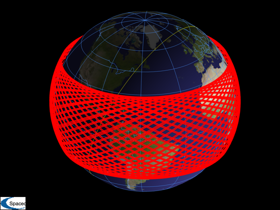
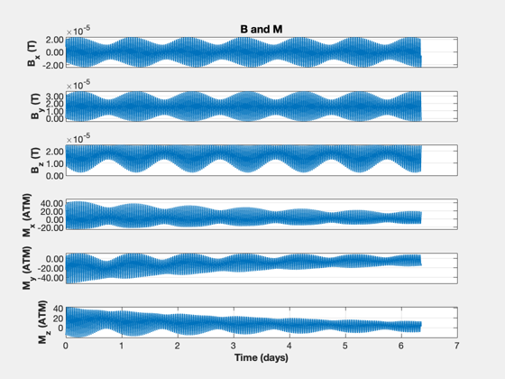
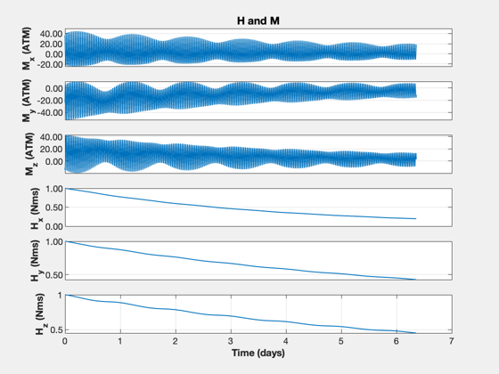
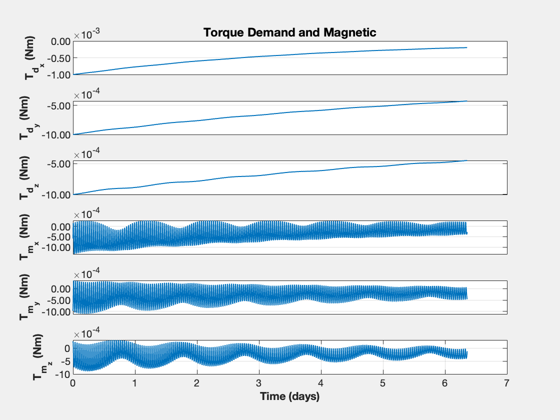
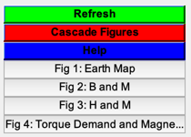

Contents
Momentum unloading with magnetic torque
Perform a long-term simulation of just the momentum unloading using magnetic torque. Performs Euler integration of the momentum vector in the ECI frame. This shows how the 3 axis torque is met over the course of the orbit depsite the mismatch at each time step.
See also MomentumUnloading, PlotOrbit, Period, RVOrbGen, BDipole, Figui, TimeHistory, Date2JD, Skew
%-------------------------------------------------------------------------- % Copyright (c) 2025 Princeton Satellite Systems, Inc. % All rights reserved. %-------------------------------------------------------------------------- % Since version 2025.1 %-------------------------------------------------------------------------- % Momentum control gain gain = 0.001; % Initial momentum (Nms) h = [1;1;1]; % Spacecraft semi-major axis sMA = 6728; % km jD0 = Date2JD([2029 6 1]); n = 10000; % Number of steps % Orbit el = [sMA 28.573469*pi/180 pi 0 0 0]; p = Period(sMA); t = linspace(0,100*p,n); [r,v,t] = RVOrbGen(el,t); jD = jD0 + t/86400; b = BDipole(r,jD);
Run the simulation
xP = zeros(15,n); for k = 1:n [tM, m, ~, tD] = MomentumUnloading( b(:,k), gain, h ); xP(:,k) = [b(:,k);m;h;tD;tM]; h = h + dT*tM; % Euler integration end
Plotting
yL = {'B_x (T) ' 'B_y (T)' 'B_z (T)' ...
'M_x (ATM) ' 'M_y (ATM)' 'M_z (ATM)' ...
'H_x (Nms) ' 'H_y (Nms)' 'H_z (Nms)' ...
'T_{d_x} (Nm)' 'T_{d_y} (Nm)' 'T_{d_z} (Nm)'...
'T_{m_x} (Nm)' 'T_{m_y} (Nm)' 'T_{m_z} (Nm)'};
PlotOrbit(r,t,jD0);
k = 1:6;
TimeHistory(t,xP(k,:),yL(k),'B and M');
k = 4:9;
TimeHistory(t,xP(k,:),yL(k),'H and M');
k = 10:15;
TimeHistory(t,xP(k,:),yL(k),'Torque Demand and Magnetic');
Figui
%--------------------------------------
% $Id: f71ed867fad289172a702d47fd815a64a6ea6bb9 $
    